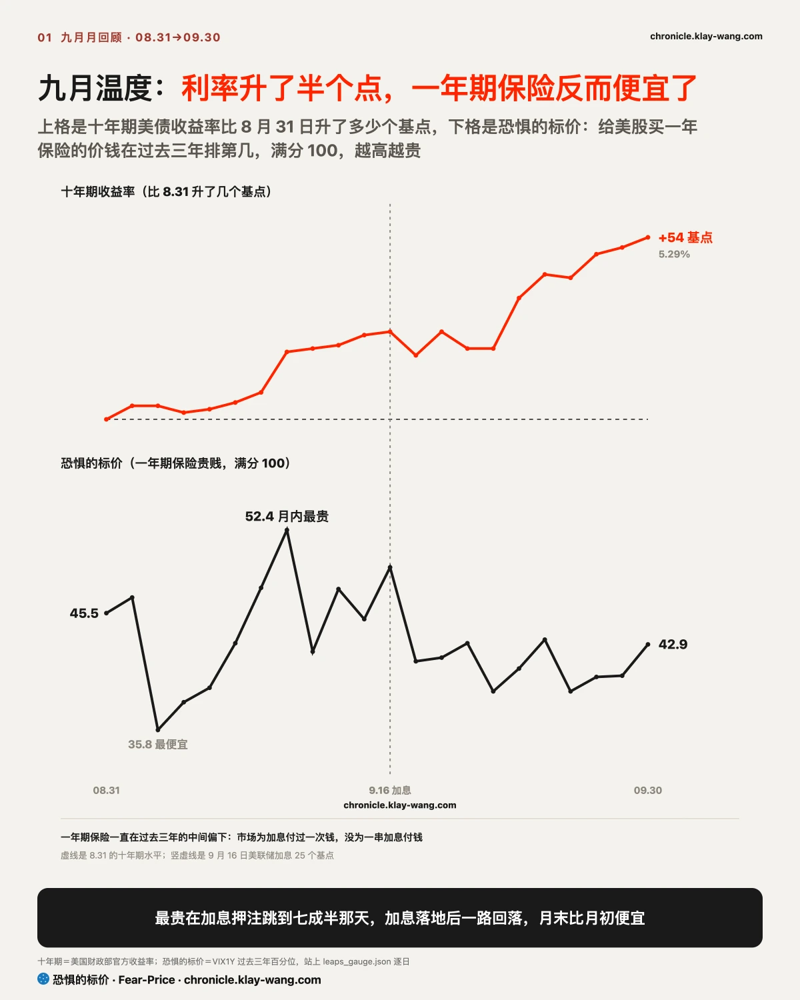
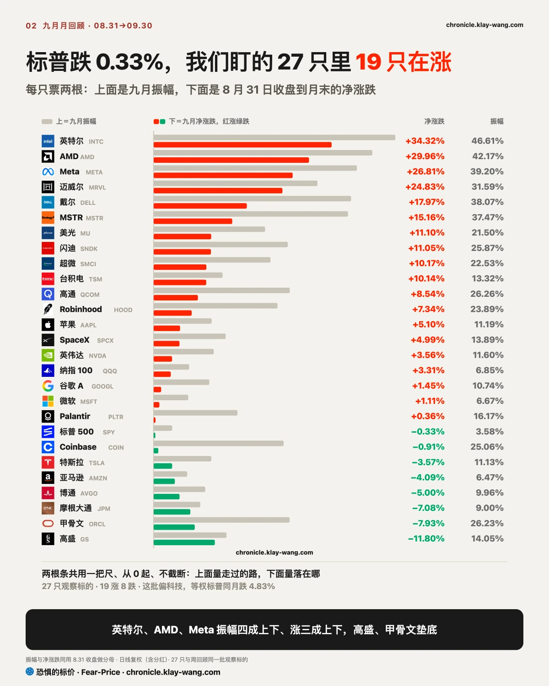
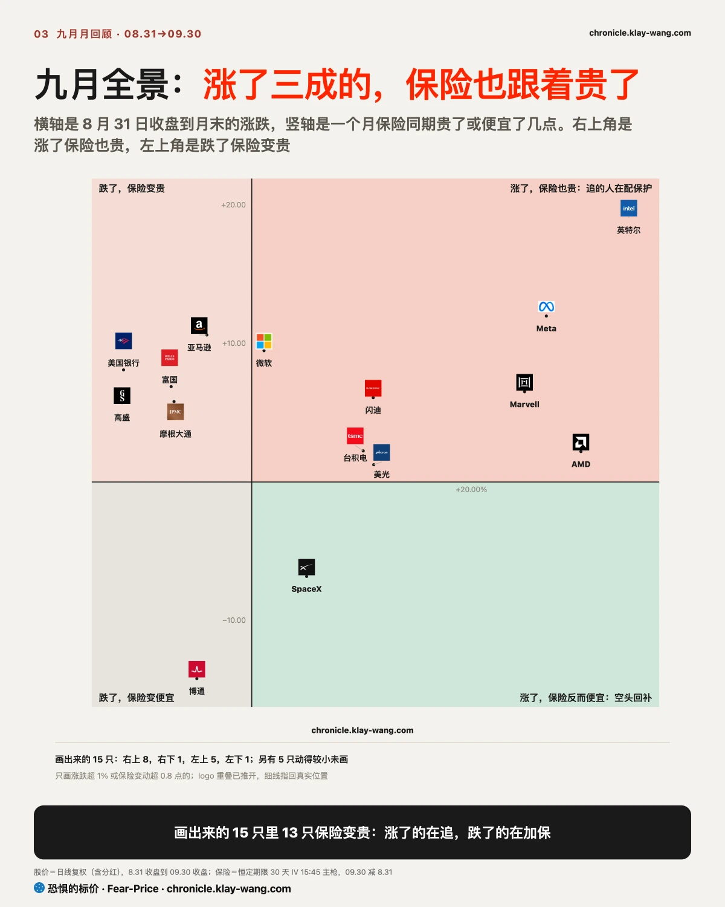
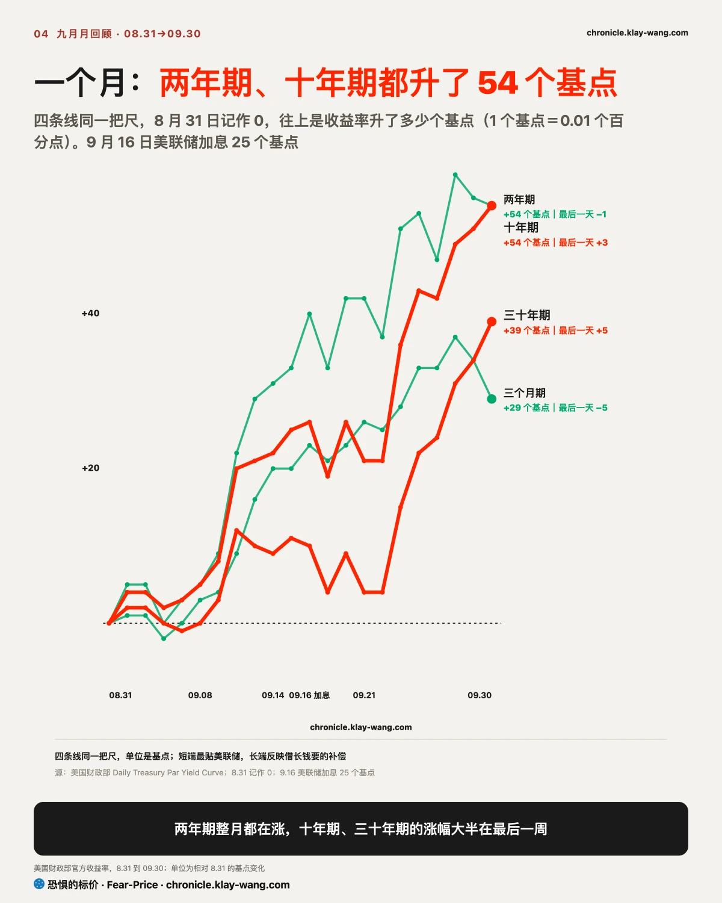
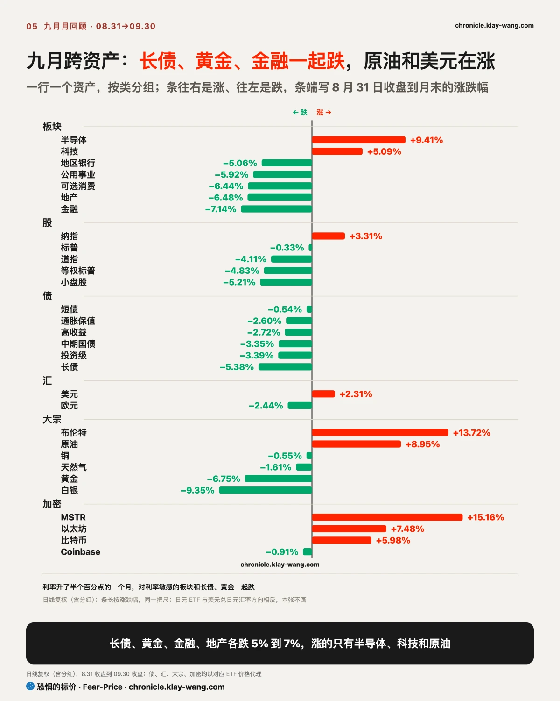
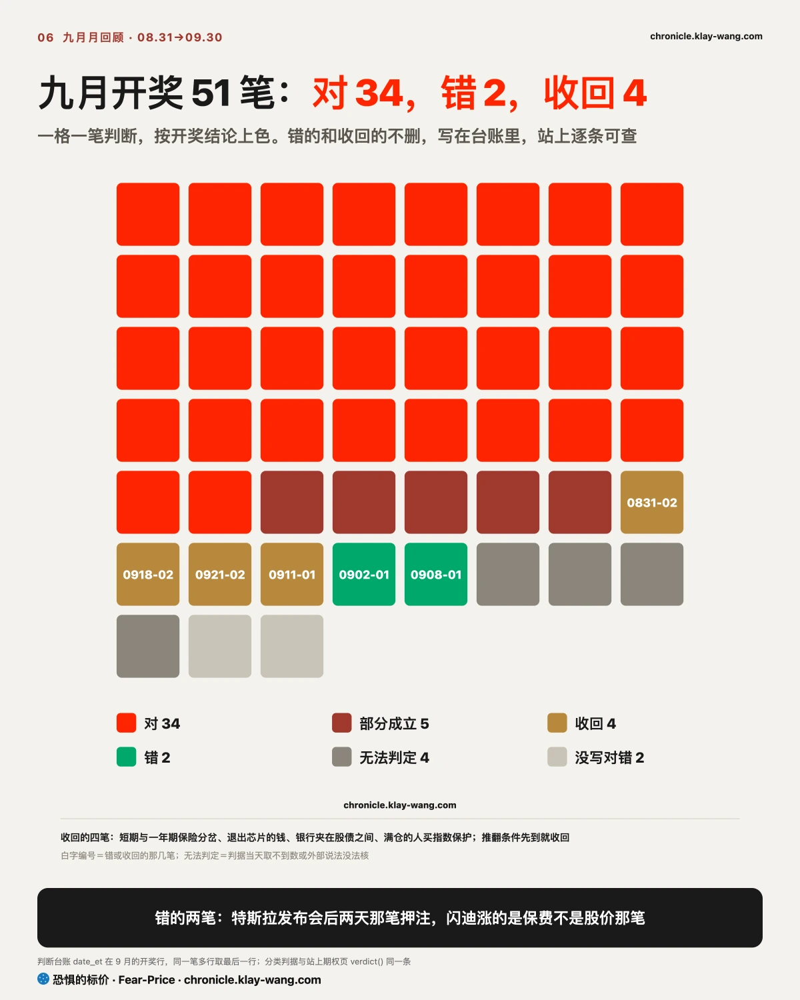

恐惧的标价指数（Fear-Price Index）· 2026-09-30 · 读数 42.9/100：一年期波动率 VIX1Y 为 21.80，处于近三年第 42.9 百分位，高即贵。逐日台账与口径 → chronicle.klay-wang.com · 转载注明：恐惧的标价指数 · Fear-Price
给美股买一年保险的价钱，九月从 45.5 分降到 42.9 分（满分 100，越高越贵），同一个月十年期利率升了半个百分点、美联储三年来第一次加息。原因有两个：市场只为一次加息付钱，押注最热的 9 月 10 日最贵，加息落地后就一路退；指数里涨的跌的互相抵掉，给整个股市的保险自然便宜，风险留在了个股里。
对你来说，给指数配保护现在仍便宜，给单只票买保护比九月初贵了。如果 10 月 28 日第二次加息真来了，一年期保护的价钱多半要往上补，为此新立的一条判断放在文末。
K 指数 1.887，低于八月末定稿的 3.298；全月最低在加息那天，1.54，那天嘴上最悲观、掏钱买保护的人也最多。K 越接近 1，越多人把担心落实到买保护上；月末离 1 还远，嘴上担心的多，真掏钱的少。按月末的恐贪读数，VIX 要升到 30.8 以上，K 才会跌破 1。历史在 chronicle.klay-wang.com/kindex，指数在 chronicle.klay-wang.com/fear-price。


九月标普 500 只跌了 0.33%，但你手里的股票多半跌了：按等权算，同一批股票跌了 4.83%，小盘股跌了 5.21%。钱只挤进了两条线：芯片，半导体 ETF 涨 9.4%，所有板块第一，英特尔、AMD 各涨三成左右；存储，美光、闪迪、SK 海力士各涨一成多。七巨头里只有 Meta 大涨 27%，英伟达只涨 3.6%，这一轮芯片行情不是它带的。
两条线背后是同一个变化：AI 从训练模型走到实际干活，吃的硬件变了。9 月 8 日 Meta 发布个人代理 Muse 之后，OpenAI、谷歌、苹果都在做同类产品，代理要反复调工具、跑任务，吃的是服务器 CPU；AI 服务器要的高带宽内存又挤占了产能，内存一路涨价。钱在追这两个新瓶颈，Meta 自己也被当成了代理之战的领跑者。它们为什么扛住了利率，下面的〔归因〕一节拆开说。

集中的代价写在保险价钱里。指数保险便宜了，15 只票里 13 只买一个月保险的价钱却在涨：风险挪进了个股。涨了三成的，追进去的人在配保护；跌了一成的银行，拿着的人在加保。九月纳指比小盘多涨 8.5 个百分点，赚的就是这份集中；9 月 30 日季末调仓按权重卖股票，砸得最狠的正是这几只撑指数的大票。

九月两年期和十年期美债收益率都升了 54 个基点，十年期到 5.29%，2002 年以来最高。数一样，推的力量不一样：两年期贴着美联储，到 9 月 16 日加息当天收盘已经涨了七成多；十年期的涨幅有六成在最后六个交易日，那时推它的已经不是加息预期。
9 月 29 日油价跌了 4%、消费者信心降到 2014 年以来最低，两年期回落，十年期照涨；9 月 30 日通胀数据比预期轻，十年期又升。借出十年的钱，债主在要额外的补偿，担心的是赤字、国债越发越多和油价。这种补偿美联储管不住。房贷跟着十年期走，美联储就算十月不加息也降不下来，你要是在等利率回落再借钱，得做好等更久的准备。
我的判断是，推十年期上行的是期限补偿，不是加息预期。如果 10 月 1 日收盘两年期回到 4.92% 以上、并且涨得比十年期多，就站不住。
九月的分化背后是一场赛跑：利率一涨，远期赚的钱折回今天就变少，只有盈利涨得比这个折扣快的公司扛得住。我的判断是，九月的赢家和输家主要按这一条分开，资金和情绪只是把它放大了。

芯片和存储赢在盈利。美光四季度收入比一年前增长了近 4 倍，下季指引又超预期；AMD 的服务器 CPU 据报明年产能已经卖光，大厂为 Agent 扩产，付钱买的正是这些芯片。盈利涨得这么快，利率多出来的半个点折扣压不住。
输家输在利率一涨就被重新定价。靠远期现金流估值、盈利又没在加速的资产先跌：地产、公用事业各跌 6% 左右，长债跌 5.4%，黄金白银这种不生息的东西跌得更多。银行本该受益于长短利差拉大，但手里长债的账面亏损先到，金融板块跌了 7%。可选消费还多挨一层：油价涨了一成，家庭靠少存钱维持花钱，钱花在加油上，就少花在别处。两年期七成多的涨幅到加息当天就走完了，十年期要的补偿还在加，这一头还没走完。
资金和期权站在同一边。截至 9 月 29 日的 25 个交易日，工业、原材料两个板块 ETF 各被净赎回近 4% 的资产，能源 2%，金融也在流出；公用事业反而被净申购了 4%，有人在借跌买防守。芯片这边，追涨的人一边买进一边给自己买保护，英特尔、Meta、AMD 买保护的价钱都在变贵。
例外也说明同一条线：英伟达的盈利同样在涨，九月却只涨了 3.6%，它的好消息早在价格里，和美光财报全超却不涨是同一件事。
你手里的票扛不扛得住高利率，先看它的盈利是不是在加速。如果十月财报季芯片和存储的指引开始放缓、股价照样涨，这条读法就站不住，那时推价格的只剩资金了。

九月开奖 51 笔，对 34 笔。错的 2 笔和收回的 4 笔，回头看错在同一个地方：把几天的资金流向读成了趋势。9 月 2 日写特斯拉发布会前的期权钱偏在上涨一侧，9 月 4 日它跌了 5.92%；9 月 8 日写闪迪涨的是保费不是股价，第二天保费就退了。收回的四笔也一样：短期和一年期保险的分岔、退出芯片的钱、银行夹在股债之间、满仓的人买指数保护，都在几天之内掉了头，退出芯片的钱 9 月 17 日就回来了。
原因和这个月的行情有关：钱集中在少数几条线上，进出都快，几天的流向很容易被下一周抹掉，十月立案会更多看持仓第二天留下多少。另有 4 笔无法判定，两笔是核心数据错过了取数日，八月刊定的规矩没管住，十月起立案时把最晚取数日写进判据。八月刊留给九月的其余几个问题，答案指向同一件事：九月是八月的延续，只是更窄。每一笔都在 chronicle.klay-wang.com 的期权页逐条可查，错的和收回的不删不改。
手里有指数基金的：指数的稳是少数几只撑的，季末已经被调仓砸过一次；它们在财报季失手，指数没有别的支撑。指数保护现在偏便宜。
手里有芯片、存储或 Meta 的：涨得最多、保险也最贵；美光全超预期却不涨，好消息开始换不来涨幅。
手里有银行、地产或公用事业的：受长端利率影响最大，十年期停在 5% 以上，压力就在。
手里有长债或黄金的：利率升半个点的月份分别跌了五到七个点；一年以内的国债和短债基本没亏。
十月有两个节点，十月之后还有一个。10 月 14 日的九月 CPI 是第一个：核心通胀的月度涨幅如果再超预期，10 月 28 日议息会很可能再加一次；不超预期，加息押注会往 12 月挪。11 月 3 日的中期选举是第三个：长端利率涨的是借长钱的补偿，背后是赤字和国债发行，选民对高利率、高物价能忍到什么程度，选举会给出第一次答案。历史上中期选举前利率常走高、选后回落，股市选后容易涨，但这一次美国的增长靠财政和 AI 投资，两样都看国会，选后两党僵持未必还是好事。
对你来说，这几个节点之前，长端利率很难说已经见顶，借钱的成本先按高位打算；手里的芯片、存储和 Meta，十月财报季要看的是指引还在不在加速。油价也要盯：霍尔木兹海峡的原油出口已经回到战前水平，油价如果跟着回落，利率和消费的压力会松一截；如果不回落，高油价加高利率会先压垮需求。挂在账上的判断如下。